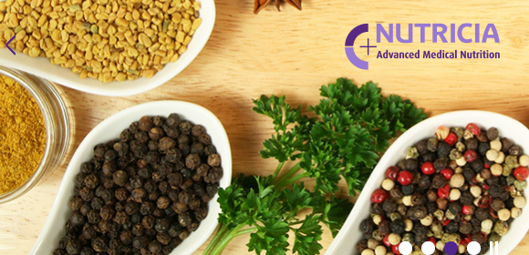

주요사업
한독의 주요사업을 한눈에 볼 수 있습니다.
-
전문의약품
전문의약품 사업부는 ‘우수한 처방의약품을 공급한다’는 사명감 아래 당뇨병 치료제 테넬리아(테넬리아, 테넬리아엠서방정), 아마릴패밀리(아마릴, 아마릴-엠, 아마릴-멕스), 고혈압치료제 테베텐, 트리테이스, 트리아핀을 포함해 B형 간염, 전립선 비대증 등 주요 만성질환 치료제를 공급하고 있습니다.
또한 폐렴예방 백신을 포함한 다양한 예방백신과 폐동맥 고혈압, PNH 치료제 솔리리스 등 희귀질환 치료제, 골다공증 치료제 비비안트와 본비바, 과민성방광 치료제 토비애즈 등을 공급하고 있습니다. -

일반의약품
피부에 직접 붙이는 관절염/근육통 치료제 ‘케토톱’, 반세기 넘게 국민의 사랑을 받아온 소화제 ‘훼스탈’, 국내 유일 하이퍼토닉 포뮬라 코 스프레이 ‘페스’, 고함량 셀레늄 비타민 ‘싸이타민’, 물에 강한 손발톱 무좀 치료제 ‘로푸록스 네일라카’ 등 한독은 차별화된 제품과 마케팅으로 다양한 분야에서 브랜드 파워를 자랑하고 있습니다.
-
진단의료기기와 진단시약
한독은 1970년대 말 독일 훽스트의 베링사로부터 진단검사시약을 도입한 것을 계기로 진단의학사업에 진출했습니다.
현재 메디컬사업본부를 두고, 체외진단시약과 장비, 메디컬 디바이스 등 다양한 제품을 제공하고 있습니다. 한독 메디컬사업본부 ‘진단사업 부문’의 대표 제품으로는 독일 지멘스사의 체외 진단용 의약품/의료기기와 벡크만 쿨터사의 미생물 동정, 항생제 감수성 검사기기가 있으며, ‘디바이스 사업 부문’의 대표 제품으로는 독일 에펜도르프사와 퀴아젠사의 생명과학 분야 분석기기 및 시약, 혈당 측정기 바로잰 등이 있습니다. -
개인 유전자 분석 서비스, 진케어(Genecare ®)
한독은 미국 Pathway Genomics ®사와 파트너십을 맺고 개인 맞춤형 프리미엄 유전자 분석 서비스 ‘진케어(Genecare ®)’를 제공하고 있습니다.
Pathway Genomics ®는 표준인증제도인CAP(College of American Pathologists)와 CLIA(Clinical Laboratory Improvement Amendments) 인증을 받은 전문 유전자 분석 기업으로 전세계 40개국 이상에 DNA 분석 및 유전자 맞춤 솔루션을 공급하고 있습니다.
진케어는 신진대사, 비만, 운동, 영양 등 타고난 개인특성을 통해 맞춤형 라이프스타일을 관리할 수 있는 패스웨이핏(PathwayFIT ®), 질병위험도 (Health Condition DNA Insight ™), 심혈관 질환(Cardiac DNA Insight ™), 약물반응(Medication DNA Insight ™), 유전질환 보인여부(Carrier Status DNA Insight ™) 프로그램을 통해 208종이상의 검사항목이 제공되며, 만1세부터 전 연령이 이용가능 합니다. -
건강기능식품
한독은 다양한 종류의 건강기능식품을 온-오프라인 소비자 채널에 공급 및 판매하고 있습니다.
‘네이처셋(NatureSet)’은 한독의 전문 건강기능식품 브랜드입니다. 네이처셋은 자연이 주는 좋은 원료(Nature)만을 모아, 개개인마다 다른 신체적인 특성에 맞춘(Set) 건강기능식품을 통해 건강하고 활기찬 삶을 선사한다는 개발 철학을 담고 있습니다.
‘컬처렐(Culturelle ®)’은 세계판매 1위* 프로바이오틱스(유산균) 브랜드입니다. 국내에서는 한독이 미국 DSM사와 파트너십을 맺고 독점 공급하고 있습니다.
한독 온라인 공식 쇼핑몰 '한독몰'에서 더 알아보기 -

메디컬 뉴트리션
한독은 2013년에 뉴트리시아(Nutricia)와 파트너십을 체결하고, 성장강화 분유 ‘인파트리니’ 100% 아미노산 분유 ‘네오케이트(Neocate)’와 크론병 환자의 식이관리를 위한 ‘엘리멘탈 028 엑스트라(Elemental 028 Extra)’ 등 총 9종의 특수의료용도식품을 시판하고 있습니다.
-
일반식품
한독은 강황(울금) 속 커큐민의 흡수율을 28배** 높인 ‘테라큐민(Theracurmin ®)’을 활용하여 다양한 건강관련 식품을 개발, 판매하고 있습니다.
대표적으로 강황(울금) 특유의 강한 맛과 향을 없애 물에 타먹을 수 있는 ‘테라큐민플러스’, 맛있는 열대과일맛 숙취해소 음료 ‘레디큐 드링크’, 국내최초 숙취해소 젤리 ‘레디큐 츄’ 등이 있습니다.
한독 온라인 공식 쇼핑몰 '한독몰'에서 더 알아보기
- *DB6 database, 2016년 (프로바이오틱스 부문)
- **섭취 4시간 후 커큐민(30mg 기준)과 비교치. 사람에 따라 다를 수 있음. 박희정 외 식품산업공학. 제 21권 제 3호 pp. 273~297(2017.9)